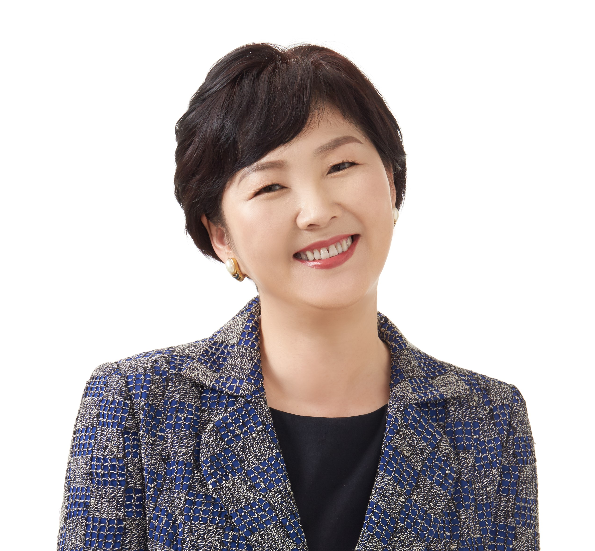
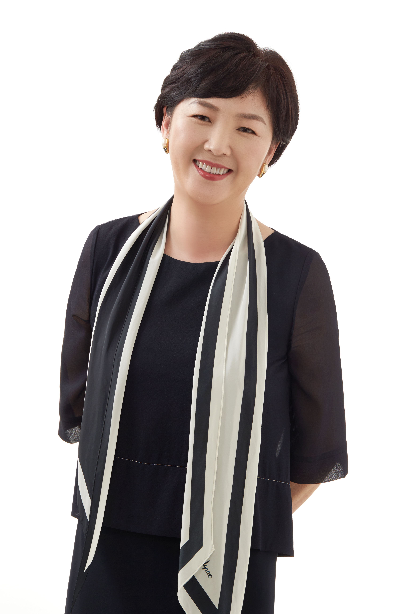
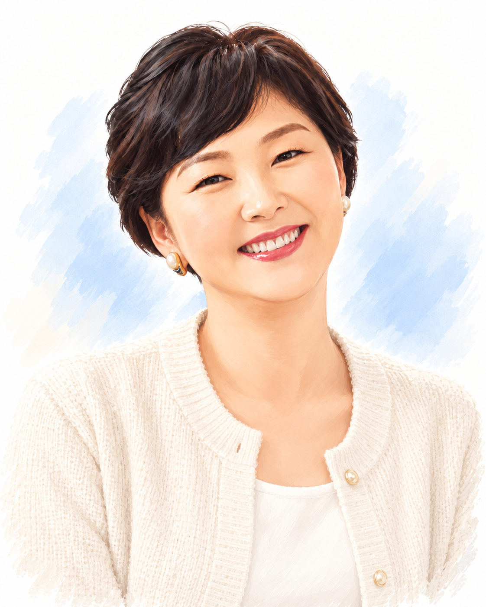

팀장 코칭Team Leader Coaching
팀 시너지 창출 그룹 코칭, 팀장 리더십 개발 그룹 코칭, 핵심 인재 양성 일대일 코칭.
Group coaching for team synergy and team leader development, and one-to-one coaching to grow key talent.
코치 · 퍼실리테이터 · 수퍼바이저Coach · Facilitator · Supervisor
코칭 경력 20년 이상, 3,000시간 이상의 코칭 경험으로 개인과 리더, 조직, 그리고 동료 코치의 성장을 돕습니다. With more than 20 years and more than 3,000 hours of coaching experience, I support the growth of individuals, leaders, organizations and fellow coaches.
코칭 문의하기Get in touch
36.5도의 온도로 사람을 만나고, 성과와 성찰, 성장과 의미가 함께하는 변화를 지원합니다.
Meeting people at a warm 36.5°C, I support change where performance and reflection, growth and meaning go hand in hand.
20년 이상 기업과 개인의 성장 여정을 함께하며 비즈니스 코칭, 리더십 코칭, 라이프 코칭 분야에서 활동해 왔습니다. 최근에는 영성과 인간의 내면적 성장을 통합하는 코칭과 수퍼비전에 깊은 관심을 가지고 탐구하며 실천하고 있습니다.
For more than 20 years I have walked alongside companies and individuals on their growth journeys, working in business coaching, leadership coaching and life coaching. Recently I have been exploring and practising coaching and supervision that integrate spirituality and inner human growth.
정혜선 코치는 (사)한국코치협회 인증 코치(KPC), 국제코치연맹(ICF) 인증 코치(PCC), 한국퍼실리테이터협회 인증 퍼실리테이터(CPF), SuccessFinder Expert Debriefer, NLP 프랙티셔너, Birkman 프랙티셔너입니다. 인코칭과 CiT코칭연구소에서 코치 트레이너로, (사)한국코치협회 인증 심사위원으로 활동하고 있으며, 현재 With Coaching Lab 대표입니다.
코치와 수퍼바이저의 멘토로, 그리고 트레이너로 — 오늘도 현장에서 활발히 활동하고 있습니다.
Haesun Chung is a Korea Coach Association Certified Coach (KPC), an ICF Professional Certified Coach (PCC), a Korea Facilitators Association Certified Professional Facilitator (CPF), a SuccessFinder Expert Debriefer, and an NLP and Birkman practitioner. She is a coach trainer at Incoaching and the CiT Coaching Institute, serves as a certification assessor for the Korea Coach Association, and is currently the founder and CEO of With Coaching Lab.
A mentor to coaches and supervisors, and a trainer — actively at work in the field today.
일리노이 대학교에서 교육공학 석사 및 박사 학위를 받았으며, HRD 컨설팅 경험과 전문성을 바탕으로 성과를 만들어 냅니다.
She holds a master's and a doctoral degree in Educational Technology from the University of Illinois, and draws on her HRD consulting expertise to deliver results.
팀 시너지 창출 그룹 코칭, 팀장 리더십 개발 그룹 코칭, 핵심 인재 양성 일대일 코칭.
Group coaching for team synergy and team leader development, and one-to-one coaching to grow key talent.
코칭 리더십과 소통에 관한 일대일 코칭.
One-to-one coaching on coaching leadership and communication.
가업을 이어받는 세대와 이어주는 세대를 위한 코칭.
Coaching for both the incoming and outgoing generations in a family business.
코치를 위한 성찰적 수퍼비전.
Reflective supervision for coaches.
조직 비전 수립, 조직문화 정착, 여성 리더십 워크숍.
Workshops on building organizational vision, embedding organizational culture, and women's leadership.
‘코칭과 멘토링 프로그램’ 개발 설계 및 진행.
Design and delivery of coaching and mentoring programs.
코치가 더 단단해지려면 누군가의 정직한 피드백과 안전한 성찰의 공간이 필요합니다. ICF 전문 과정을 통해 코치의 성장 여정에 함께합니다.
Coaches grow strongest with honest feedback and a safe space to reflect. Through ICF specialist training, I walk alongside coaches on their journey.
진행 중In progress
ICF 멘토 코치 전문 자격(MCS)은 ICF 멘토 코칭 역량을 기반으로 멘토 코칭 교육과 평가 훈련을 마친 코치를 인정하는 자격입니다. 인증을 준비하는 코치가 일관되고 신뢰할 수 있는 발달적 피드백을 받을 수 있도록 돕습니다.
The ICF Mentor Coach Specialization (MCS) recognizes coaches who have completed education and evaluation training in mentor coaching, grounded in the ICF Mentor Coaching Competencies. It helps credential candidates receive consistent, trustworthy developmental feedback.
진행 중In progress
ICF 코칭 수퍼비전 전문 자격(CSS)은 코치의 지속적인 성장과 윤리적 실천, 전문가로서의 성숙을 돕는 수퍼바이저를 위한 자격입니다. 수퍼비전은 코치가 자신의 코칭을 더 깊이 들여다보는 비밀이 보장되는 협력적 파트너십입니다.
The ICF Coaching Supervision Specialization (CSS) is for supervisors who support a coach's ongoing development, ethical practice and professional maturity. Supervision is a confidential, collaborative partnership in which coaches look more deeply at their work.
검증된 자격과 과학적 도구를 코칭에 더해, 느낌을 넘어 근거 있는 변화를 만듭니다.
I bring certified credentials and research-based tools into coaching, so change rests on evidence, not just impressions.
50년 이상의 박사급 연구를 바탕으로 한 행동 역량 진단 도구입니다. 개인이 일터에서 발휘하는 행동과 특성의 고유한 조합을 세밀하게 보여 줍니다. 저는 공인 Expert Debriefer로서 결과를 해석합니다.
A behavioral competency assessment built on more than 50 years of PhD-level research. It reveals the unique mix of behaviors and traits a person brings to work. I interpret the results as a SuccessFinder Expert Debriefer.
개인의 행동 방식, 동기, 스트레스 반응을 함께 살펴보는 성향 진단 도구입니다. 겉으로 보이는 모습과 내면의 필요를 구분해 이해하도록 돕습니다.
A personality assessment that looks at a person's behavior, motivations and stress responses together, helping distinguish outward style from inner needs.
국제코치연맹(ICF)이 인증하는 전문 코치(Professional Certified Coach) 자격으로, 국제 기준의 코칭 역량과 윤리를 갖추었음을 의미합니다.
The Professional Certified Coach credential from the International Coaching Federation, signifying coaching competence and ethics to an international standard.
ICF 알아보기 →About ICF →(사)한국코치협회가 인증하는 전문코치(KPC) 자격입니다. 협회의 인증 심사위원으로도 활동하며 한국 코칭의 전문성 기준을 함께 세우고 있습니다.
The Professional Coach (KPC) credential of the Korea Coach Association. I also serve as one of its certification assessors, helping uphold professional standards in Korean coaching.
한국코치협회 →Korea Coach Association →한국퍼실리테이터협회 인증 퍼실리테이터(CPF)로서 회의와 워크숍에서 참여를 이끌어 내고 합의를 만듭니다. NLP 프랙티셔너로서 언어와 사고 패턴을 다루는 기법을 코칭에 접목합니다.
As a certified professional facilitator (CPF) I draw out participation and build agreement in meetings and workshops. As an NLP practitioner I bring language and thinking-pattern techniques into coaching.
Lifeforming의 Accelerated Coach Training(ACT)은 15주 동안 진행되는 집중 코치 교육 과정입니다. 온라인 그룹 수업과 워크숍, 동료 코칭, 트레이너와의 1:1 코칭으로 구성되며, 주당 약 4시간으로 일상과 병행할 수 있습니다. Joseph Umidi 코치와 함께 진행합니다.
Lifeforming's Accelerated Coach Training (ACT) is an intensive 15-week coach training program. It combines online group classes, workshops, peer coaching and one-on-one coaching with a trainer, at about four hours a week so it fits alongside daily life. I will be leading it together with Joseph Umidi.
※ 상세 일정은 확정되는 대로 안내드립니다.※ Detailed schedule to be announced.
ACT 자세히 보기 →About ACT →
한계를 뛰어넘는 여성이 되고 싶다면? 이 시대의 진정한 여성리더가 되고 싶다면? 『최고가 되는 여성리더십 5단계』는 『핸드백 속 스니커즈』의 개정판으로 야망 있는 ‘여성리더’를 위한 책이다. 대한민국 코칭 역사의 대표주자인 ㈜인코칭 홍의숙 대표를 필두로 정혜선, 허영숙 코칭 전문가가 여성리더의 전략과 실전 지침을 쉽게 풀어냈다.
당신이 사회에서 열띤 활약을 펴고 있는 여성이라면, 『핸드백 속 스니커즈』에 담긴 5가지 핵심 전략을 통해 진정한 여성리더로 거듭날 수 있다. 미래의 잠재적 리더로서 꿈과 열망을 품고 이제 막 사회생활을 시작한 여성도 마찬가지다. 이제 더 높은 계단을 오르기 위해 핸드백에서 스니커즈를 꺼내 신어보자. 그러다 보면 일과 삶이라는 양가적 가치의 균형, 여성의 강점과 리더가 갖추어야 할 능력 등을 자연스럽게 터득하여 멋진 여성리더로 변화할 수 있을 것이다.
Want to be a woman who goes beyond limits? Want to become a true woman leader for our times? The 5 Steps of Women's Leadership to Become the Best is a revised edition of Sneakers in the Handbag, written for ambitious women leaders. Led by Hong Eui-sook, CEO of Incoaching and a leading figure in Korean coaching history, coaching experts Haesun Chung and Heo Young-sook explain women leaders' strategies and practical guidelines in an accessible way.
If you are a woman actively making her mark in society, the five core strategies in Sneakers in the Handbag can help you become a true leader. The same is true for women just starting their careers with dreams and aspirations as potential future leaders. Take your sneakers out of your handbag to climb higher, and along the way you will naturally learn to balance work and life and to recognize women's strengths and the abilities a leader needs.
구매 페이지 보기 →View purchase page → ※ 현재 품절Currently out of stock코치와 멘토의 전문성 개발을 위해 수퍼비전에 대한 요구가 점점 더 많아지고 있다. 동료와 함께 성찰적 실천에 참여하는 일은 이런 요구를 충족하는 귀중한 방법이다. 그렇지만 동료 코칭수퍼비전은 공모할 가능성이나 공유된 개발 수준에서 정체될 가능성이 크다. 이는 고유한 도전과제이다. 이 책은 동료 코칭수퍼비전에 직접 참여하여 코치와 멘토 공동체를 교육하는 현직 전문 수퍼바이저가 집필했다. 프랙티셔너들이 전문 수퍼비전으로 다양한 개인 및 집단의 성찰적 실천 활동을 개발하고 통합할 수 있도록 안내한다. 필수 이론과 방법론을 바탕으로, 동료 코칭수퍼비전에서 직면하는 도전과 윤리적 딜레마를 탐구하고, 구체적인 지침과 유용한 기법 및 유용한 템플릿을 제공한다.
이 안내서는 개인 코칭 및 멘토링 프랙티셔너와 공동체, 대학과 교육 프로그램을 포함한 동료 학습 그룹의 필수적인 참고 자료이다. 또한 코칭 문화를 발전시키는 전문 수퍼바이저와 조직에도 도움이 된다.
Coaches and mentors increasingly need supervision to develop professionally. Engaging in reflective practice with peers is a valuable way to meet that need, but peer supervision can fall into collusion or stall at a shared level of development, a challenge in its own right. Written by practising supervisors who work directly in peer supervision and educate coach and mentor communities, this book guides practitioners in developing and integrating reflective practice for individuals and groups through professional supervision. Grounded in essential theory and methodology, it explores the challenges and ethical dilemmas of peer supervision and offers concrete guidance, useful techniques and practical templates.
An essential reference for individual coaching and mentoring practitioners, communities, and peer learning groups including universities and training programmes, it also benefits professional supervisors and organizations that are advancing a coaching culture.
구매하기 →Buy this book →이 책은 101가지 실천적인 코칭수퍼비전 기법을 이론적 맥락에서 검토한다. 10개의 장으로 구성되었으며, 여러 철학적 기반을 반영했다. 실존주의, 게슈탈트, 긍정심리학, 정신역동, 해결 중심, 시스템적, 사고 환경(Thinking Environment), 교류분석, 초개인적 접근, 절충적 접근 등이다.
각 분야 리더가 통찰을 바탕으로 철학과 원칙을 개괄적으로 설명하고 실제 적용 방식을 제시한다. 이 책은 독자가 어떤 기술을 언제 사용할지 결정하는 데 도움을 주고, 자기 작업에 맞게 구현하거나 조정하도록 단계별로 안내한다. 다양한 기법을 담은 이 책은 모든 수퍼바이저가 자신의 레퍼토리를 넓히고 궁극적으로 더 나은 실천가가 되는 데 도움이 될 것이다.
경험이 풍부한 수퍼바이저, 초보 수퍼바이저, 수퍼바이지 모두가 접근하기 쉽고 실용적으로 활용할 수 있는 귀중한 자료이다. 이는 수퍼비전과 코칭 실천을 최신의 것으로 유지하고 실험할 수 있도록 다양한 영감을 줄 것이다.
This book examines 101 practical coaching supervision techniques in their theoretical context. Across ten chapters, it reflects a range of philosophical approaches, including existential, Gestalt, positive psychology, psychodynamic, solution-focused, systemic, Thinking Environment, transactional analysis, transpersonal and eclectic approaches.
Leaders in each field outline its philosophy and principles and show how to apply them in practice. The book helps readers decide which techniques to use and when, then guides them step by step in adapting and applying the techniques to their own work. Its wide range of methods can help supervisors expand their repertoire and become more effective practitioners.
Accessible and practical for experienced and new supervisors as well as supervisees, this resource offers inspiration for keeping supervision and coaching practice current and open to experimentation.
구매하기 →Buy this book →이 책은 해결 중심 팀코칭의 배경과 철학을 소개하고, 다양한 팀코칭 형식에서 해결 중심 접근법의 실질적인 적용 방법을 탐구한다. 독자들은 팀코칭 프로세스의 유용한 구조를 찾을 수 있으며, 온라인과 대면 환경 모두에서 사용할 수 있는 ‘팀코칭 개입 활동(moves)’(일반적으로 ‘기법이나 도구’로 불리는 것들)에 관한 상세한 설명도 포함한다.
이 책을 통해 계약 협상부터 워크숍 디자인, 사후 관리와 평가까지, 일련의 해결 중심 팀코칭 프로세스를 쉽게 계획할 수 있다. 또 갈등과 같은 어려운 팀 상황을 다루는 방법도 담고 있다. 현장 작업팀부터 경영진 팀, 애자일 팀까지 다양한 형태의 팀에 대한 코칭 방법을 제시하며, 특별한 형식의 팀코칭과 아주 큰 규모의 팀을 이끄는 방법에 관해서도 설명한다.
아울러 ICF, EMCC, AC의 팀코칭 역량을 살펴본다. 해결 중심 팀코칭이 이러한 역량을 내재화하는 쉬운 방법임을 설명하여, 인증이나 자격을 취득하려는 독자들에게도 매우 유용하다.
This book introduces the background and philosophy of solution-focused team coaching and explores practical ways to apply this approach across different team coaching formats. It offers useful structures for the team coaching process and detailed explanations of team coaching “moves”—often called techniques or tools—that can be used both online and in person.
Readers can use the book to plan a complete solution-focused team coaching process, from contracting and workshop design to follow-up and evaluation. It also addresses challenging team situations such as conflict, and offers approaches for a wide range of teams, from frontline work teams to executive and agile teams. The book also explores specialized team coaching formats and how to work with very large teams.
It considers the team coaching competencies of the ICF, EMCC and AC, and explains how solution-focused team coaching can be an accessible way to embody them—making the book especially useful for readers pursuing accreditation or qualifications.
구매하기 →Buy this book →코칭수퍼비전에 영향을 준 인접 분야의 이론과 모델, 실천에 근거한 독자적 모델, 각국의 경험과 쟁점을 모은 책이다. 2011년 초판 이후 10여 년의 성과를 반영한 개정판이다.
명실상부한 전 세계 38명의 연구자가 참여하여, 모든 영역과 쟁점을 포괄하는 코칭수퍼비전의 ‘연구 현황과 과제’를 논의한다. 코칭수퍼비전 소개와 연구의 출발지를 넘어 실천을 위한 전진 기지에서 자기 활동의 방향과 거리를 탐색할 수 있다. 코칭수퍼비전 모델과 개입 방법, 동료 수퍼비전, 집단 수퍼비전, 팀코칭수퍼비전을 다룬다. 부록으로 ICF 코칭수퍼비전 역량 모델(2024.9)을 수록했다.
오늘날 코칭수퍼비전을 깊이 있게 탐색하고 실천하려는 코치에게 좋은 자원이 될 것이다.
This book brings together theories and models from neighbouring fields that have shaped coaching supervision, original practice-based models, and experiences and issues from different countries. It is a revised edition reflecting a decade or more of developments since the first edition in 2011.
With contributions from 38 researchers worldwide, it discusses the current state of research and the challenges across every area and issue of coaching supervision. Moving beyond an introduction to supervision and its research origins, it serves as a base for practice, helping readers explore the direction and scope of their own work. It covers coaching supervision models and interventions, peer supervision, group supervision and team coaching supervision, and includes the ICF Coaching Supervision Competency Model (September 2024) as an appendix.
It is a valuable resource for coaches who want to explore and practise coaching supervision in depth today.
구매하기 →Buy this book →그룹 퍼실리테이션과 회의 전문가이자 베스트셀러 저자인 Dale Hunter 박사가 집필한 이 책은 Hunter 박사의 고전인 『The Art of Facilitation』의 개정 증보판이다. 퍼실리테이션과 그룹 시너지 분야의 최신 연구물을 담고 있으며, 야심 찬 퍼실리테이터가 활용할 수 있는 교육 프로그램도 포함되어 있다.
이 책은 퍼실리테이션, 인적 자원, 관리, 중재, 팀 리더십, 과정 개발, 개인과 팀 코칭 분야의 종사자들에게 큰 도움이 될 것이다. 효과적인 그룹과 활발한 상호관계를 책임지는 위치에 있다면 바로 이 책이 안내해 줄 것이다.
Written by Dr. Dale Hunter, a group facilitation and meeting expert and bestselling author, this book is a revised and expanded edition of her classic, 『The Art of Facilitation』. It includes the latest research on facilitation and group synergy, as well as a training programme for aspiring facilitators.
The book is valuable for practitioners in facilitation, human resources, management, mediation, team leadership, process development, and individual and team coaching. If you are responsible for effective groups and lively interaction, this book can guide you.
구매하기 →Buy this book →이 책은 팀코칭의 핵심 원리와 국제코칭연맹(ICF)의 팀코칭 역량 기준을 명확히 제시한다. 더 나아가 팀의 역동성과 복잡성을 이해하고, 팀 전체를 하나의 시스템으로 바라보는 관점은 한국적 맥락에서 팀코칭을 실천하는 데에도 중요한 통찰을 제공한다. 이를 통해 독자들이 팀코칭의 본질을 깊이 이해하고, 현장에서 의미 있는 변화를 만들어낼 수 있는 지침서이다.
This book clearly presents the core principles of team coaching and the International Coaching Federation (ICF) team coaching competencies. Its view of team dynamics and complexity, and of the team as a whole system, also offers important insights for practising team coaching in the Korean context. It is a practical guide that helps readers deeply understand the essence of team coaching and create meaningful change in the field.
구매하기 →Buy this book →
코칭, 퍼실리테이션, 수퍼비전에 대해 편하게 문의해 주세요.Reach out about coaching, facilitation or supervision.